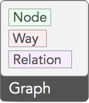
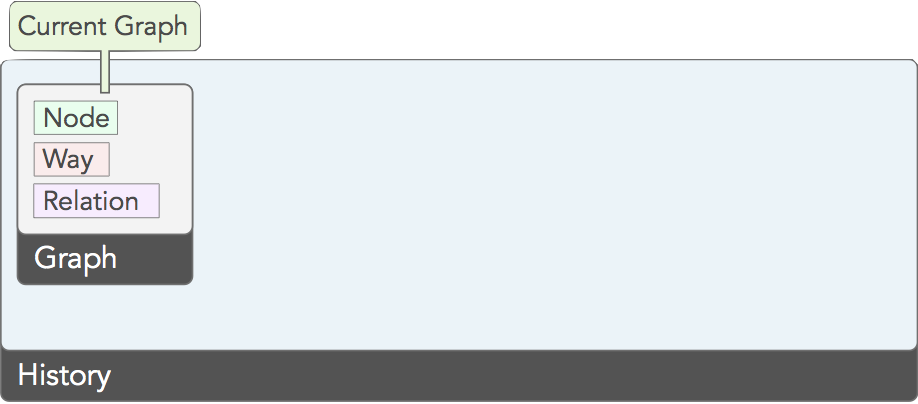
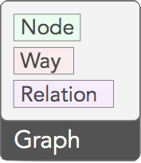
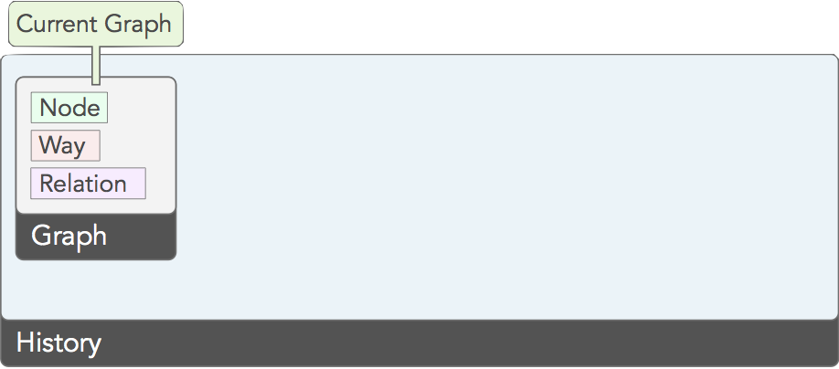

John Firebaugh
- (m) MapBox
- (t) jfire
- (h) jfirebaugh
| 11,728 | sloc |
| 6,379 | sloc tests |
| 10,000 | users |
| 1,728 | closed issues |
| 41 | translations |
| 3 | lead developers |
| 1 | designer |
| jQuery | D3 |
|---|
| Ajax | ✓ | ✓ |
|---|
| Attributes | ✓ | ✓ |
|---|
| CSS | ✓ | ✓ |
|---|
| Data | ✓ | ✓ |
|---|
| Dimensions | ✓ | ✗ |
|---|
| Effects | ✓ | ✓ |
|---|
| Events | ✓ | ✓ |
|---|
| Manipulation | ✓ | ✓ |
|---|
| Selectors | ✓ | ✓ |
|---|
| Traversal | ✓ | ✓ |
|---|
| Data Binding | ✗ | ✓ |
|---|
Declarative > Imperative
jQuery
var li = $('li');
if (layerSelected(li.data('layer-id'))) {
li.addClass('selected');
} else {
li.removeClass('selected');
}
jQuery
$('.layers li').each(function() {
var li = $(this);
if (layerSelected(li.data('layer-id'))) {
li.addClass('selected');
} else {
li.removeClass('selected');
}
});
D3
items.classed('selected', function(d) { return d.selected; });
Raw DOM APIs
jQuery
D3
?
XSL
Khan
Imperative
Declarative
 




Templates
}

Templates
Continuity of Expressiveness
Master the Data-Join
Master the Data-Join
Work-minimization Techniques
- Declare static properties on the enter selection
- Declare dynamic properties on the update selection
- Batch updates: no individual "instance changed" events
- Filter the selection to the entities which actually changed
Solution: SMASH!

mbostock/smash
D3_FILES = \
node_modules/d3/src/start.js \
node_modules/d3/src/arrays/index.js \
node_modules/d3/src/behavior/behavior.js \
node_modules/d3/src/behavior/zoom.js \
node_modules/d3/src/core/index.js \
[...]
node_modules/d3/src/end.js
js/lib/d3.v3.js: $(D3_FILES)
node_modules/.bin/smash $(D3_FILES) > $@
Problem: D3 is too small!
Solution: Write Plugins!
d3.selection.prototype.dimensions = function (dimensions) {
if (!arguments.length) {
var node = this.node();
return [node.offsetWidth,
node.offsetHeight];
}
return this.attr({width: dimensions[0], height: dimensions[1]});
};
More Plugins!
- d3/d3-plugins
- shawnbot/d3-bootstrap